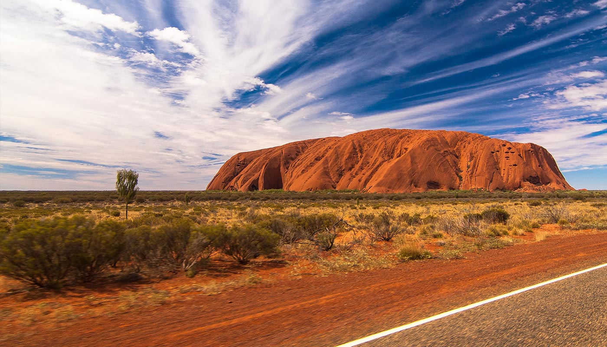

Geografía de Australia
La geografía de Australia abarca una amplia variedad de regiones biogeográficas siendo el continente más pequeño del mundo, pero el sexto país más grande. La población de Australia está concentrada a lo largo de la costa este y sureste.

Australia se encuentra en una placa tectónica continental de la placa Indoaustraliana.
El país cuenta con 11.044 áreas protegidas que cubren 1.487.710 km², es decir, el 19.27% de la superficie total de Australia.
Hidrografía
Los ríos más caudalosos nacen en la Gran Cordillera Divisoria, en su inmensa mayoría, se dirigen hacia el este y tras un corto curso se vuelcan hacia el océano Pacífico, sólo existen dos ríos de longitud importante: el Murray (el más caudaloso de Australia) y el Darling, el Darling es el de mayor longitud pero mucho menos caudaloso y resulta ser afluente del Murray en el sur de Australia desembocando en la Gran Bahía Australiana. En cuanto al sistema lacustre es en realidad palustre: algunos lagos de este país son extensos pero someros y en proceso de desecación, muchas veces transformados en grandes salares: el mayor de todos es el lago Eyre, cuyo fondo se ubica 16 m bajo el nivel del mar. El segundo en importancia es el lago Torrens, seguido por el lago Gairdner y el lago Frome, todos ubicados en el centro y sur de Australia Meridional.

Clima
La mayor parte del clima de Australia es de tipo desértico o semiárido ya que el 40% de la superficie del país está cubierta de dunas de arena. Tan sólo el sureste y el suroeste tienen un clima templado y un suelo fértil. La zona norte del país tiene un clima tropical: parte cubierta de pluvisilva, parte de pradera y parte de desierto.
Las precipitaciones son muy variables, con frecuentes sequías que duran varias estaciones. En ocasiones se originan tormentas de arena que cubren alguna región o incluso varios estados y, ocasionalmente, se originan grandes tornados. Los crecientes niveles de salinidad y la desertificación están cambiando el paisaje australiano en ciertas zonas.
Geografía física
Australia es un país en la macro-unidad geográfica Oceanía, situado entre el océano Índico y el sur del océano Pacífico. Es el sexto país más extenso del mundo con un total de 7 686 850 kilómetros cuadrados de superficie, incluyendo a la isla de Lord Howe y la isla Macquarie.
Australia tiene una longitud de costa de 25 740 kilómetros, con una zona económica exclusiva de 8 148 250 km². Esta zona económica exclusiva no incluye el Territorio Antártico Australiano. El país no tiene fronteras terrestre
Geología
Australia tiene una historia geológica relativamente estable. Algunas fuerzas geológicas importantes como deslizamientos tectónicos tuvieron lugar en los comienzos de la historia australiana, cuando todavía formaba parte de Gondwana. La erosión y el clima han cambiado en gran medida la superficie australiana, siendo hoy día uno de los países más planos del mundo.
Orografía
Existen varios cordones montañosos, pero ninguno de ellos posee grandes alturas: La cumbre más elevada de toda Australia es el Monte Kosciuszko, de 2.228 metros, en el extremo sur de la principal cordillera llamada Gran Cordillera Divisoria o (en inglés): Great Dividing Range la cual se extiende como un gigantesco arco cercano a la costa del océano Pacífico; la altitud promedio de este sistema montañoso es de 1.000 m.